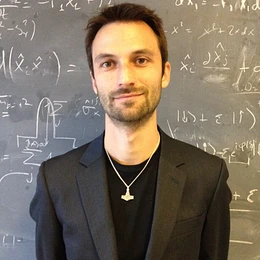

EQA in general
The European Quantum Academy (EQA) establishes a comprehensive, pan-European ecosystem for quantum education and training, ensuring a continuous pipeline of talent from schools to doctoral research and lifelong learning.
Building on the achievements of previous pan-European projects such as QTEdu, DigiQ, QTIndu, and QUCATS, the EQA represents the largest community in quantum workforce development to date, uniting 71 partners and +100 affiliates in six Regional Quantum Academies, bridging national ecosystems into a coordinated European framework.
The Academy pursues four strategic objectives:
-
Creating a sustainable European structure integrating outreach, higher education, and workforce training.
-
Designing harmonised curricula and flexible pathways at EQF levels 7-8, aligned with the European Competence Framework for Quantum Technologies.
-
Expanding access to experimental and digital infrastructures, enabling scalable hands-on learning.
-
Continuously monitoring and steering Europe’s quantum workforce through labour market intelligence and community engagement.
WP Descriptions
WP1 - Engagement with the general public and with high-schools
Work Package 1 will establish a coordinated European approach to quantum outreach and high-school education by mapping existing actors, initiatives, and educational content across Europe. Based on this overview, it will identify gaps and develop a roadmap for how the Quantum Academy can strengthen engagement with both the general public and high-school audiences. The work package will also support mobility, knowledge exchange, and meetings between key stakeholders in quantum outreach and education, while promoting flagship activities that can catalyse concrete engagement actions across Europe.
WP2 - EQA Bachelor and Master
Work Package 2 will create the European Quantum Masters as a collaborative network of higher education institutions offering harmonised quantum science and technology curricula across Europe. It will map existing MSc programmes, identify skills gaps, and develop a qualification framework for the EQA Masters. Through joint curriculum development, knowledge sharing, and direct engagement with students, the work package will upgrade existing programmes, support the creation of new master-level offerings, and provide practical training opportunities. Over time, it will expand the EQA Masters network beyond the project consortium to strengthen Europe's quantum education pipeline.
WP3 - EQA Pioneer PhD Programme
Work Package 3 will develop the EQA PhD Program by mapping existing doctoral training requirements across European institutions and identifying gaps in current provision. It will structure a coordinated PhD framework that supports international and intersectoral mobility, multiple-mentor models, and shared access to courses, teachers, resources, and infrastructure. By developing best-practice guidelines and contributing to more standardised European PhD practices in quantum science and technology, the work package will strengthen doctoral training while supporting PhD mobility and the EQA Pioneer Program.
WP4 - Quantum workforce upskilling and reskilling
Work Package 4 will develop a coordinated European approach to post-graduation quantum training by identifying academic and commercial actors offering QT-related courses, modules, certifications, and learning tools. It will create a structured inventory of training resources aligned with the CFQT, target groups, and learning formats, while facilitating exchange between regions through workshops, shared module libraries, and collaboration with industry networks. The work package will also support visibility and access by developing an online portal with curated, searchable training offerings, connected to the main Academy platform and a Career Pathway Navigator to guide learners and professionals across different quantum career paths.
WP5 - Ecosystem monitoring and growth
Work Package 5 will solidify the connection between quantum education, workforce needs, and regional innovation across Europe. It will monitor the quantum job market, emerging skills, and long-term industry trends to ensure that EQA activities remain aligned with future talent demands. The work package will also expand the global quantum education ecosystem through strategic partnerships, coordination with EU and international actors, and support for Regional Quantum Academies. By promoting entrepreneurship, business readiness, vocational training, and knowledge exchange, it will help prepare learners and professionals for practical opportunities in the growing quantum economy.
WP6 - Diadactic support and quality assurance
Work Package 6 will ensure the quality, coordination, and knowledge-sharing capacity of the European Quantum Academy by identifying key networks, stakeholders, resources, and gaps across the quantum education landscape. It will establish Special Interest Groups in strategic areas, while developing practical frameworks, tools, and activities such as forums, clinics, surveys, and catalogues to support didactic innovation and quality assurance of EQA courses and materials. By connecting consortium partners with the wider European community, the work package will foster collaboration, shared standards, and continuous improvement across the Academy.
WP7 - Experimental Skill Development
Work Package 7 will strengthen experimental quantum education in Europe by creating a comprehensive and accessible overview of existing experimental teaching capabilities, resources, and infrastructure. These resources will be aligned with the Quantum Competence Framework to identify coverage gaps and define a clear roadmap for future development. Based on this roadmap, the work package will support knowledge exchange, event-based training, scaling, upgrading, and the development of experimental capacity across European institutions.
WP8 - Consortium Management, Communication & Infrastructure
Work Package 8 will ensure the effective implementation and long-term sustainability of the European Quantum Academy through strong project management, clear coordination structures, and inclusive governance. It will provide the operational infrastructure needed to support collaboration across partners and Regional Quantum Academies, while ensuring financial oversight, visibility, reporting, and strategic alignment.
Key People
-

Jacob Sherson
Director of the CHI
sherson@mgmt.au.dk